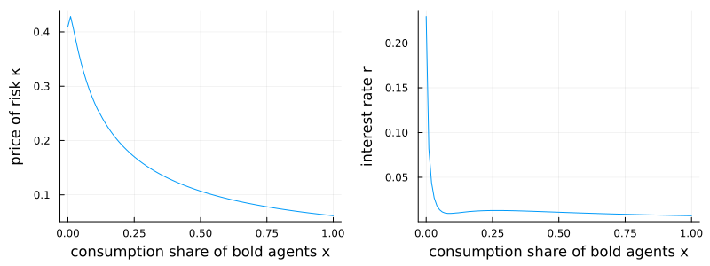

Gârleanu–Panageas (2015): heterogeneous agents
This is the package's most demanding kind of problem: a general-equilibrium model with endogenous volatility and several coupled value functions. Two types of agents differ in risk aversion and elasticity of intertemporal substitution — type A is "bold" (low $\gamma_A$), type B "conservative" (high $\gamma_B$). The single state $x$ is the consumption share of type A. Four claims are priced jointly: the wealth–consumption ratios $p_A, p_B$ of the two agents and two human-capital claims $\phi_1, \phi_2$.
What makes it hard is that the volatility of the state, $\sigma_x$, is endogenous — it depends on the very derivatives $p_A', p_B'$ we are solving for — so the upwind direction must be recomputed from the resulting drift $\mu_x$ each iteration.
The model
The parameters:
using EconPDEs, Plots
Base.@kwdef struct GarleanuPanageasModel
γA::Float64 = 1.5 # relative risk aversion, type A (bold)
ψA::Float64 = 0.7 # elasticity of intertemporal substitution, type A
γB::Float64 = 10.0 # relative risk aversion, type B (conservative)
ψB::Float64 = 0.05 # elasticity of intertemporal substitution, type B
ρ::Float64 = 0.001 # rate of time preference (discount rate)
δ::Float64 = 0.02 # death (turnover) rate
νA::Float64 = 0.01 # share of type A among newborns
μ::Float64 = 0.02 # aggregate consumption growth (drift)
σ::Float64 = 0.041 # aggregate consumption volatility
B1::Float64 = 30.72 # loading on first component of labor-income profile
δ1::Float64 = 0.0525 # decay rate of first labor-income component
B2::Float64 = -30.29 # loading on second component of labor-income profile
δ2::Float64 = 0.0611 # decay rate of second labor-income component
ω::Float64 = 0.92 # labor share of aggregate output
function GarleanuPanageasModel(γA, ψA, γB, ψB, ρ, δ, νA, μ, σ, B1, δ1, B2, δ2, ω)
# Normalize the labor-income loadings once, at construction, so the newborn's human capital is one.
scale = δ / (δ + δ1) * B1 + δ / (δ + δ2) * B2
new(γA, ψA, γB, ψB, ρ, δ, νA, μ, σ, B1 / scale, δ1, B2 / scale, δ2, ω)
end
endMain.GarleanuPanageasModelThe state space
We build the grid and the initial guess first, because they fix the names used everywhere else. The grid is a NamedTuple whose key is the state variable (x, the consumption share of type A); the guess is a NamedTuple whose keys are the unknown functions (pA, pB, ϕ1, ϕ2), holding one starting value at each grid point. These names are what reappear inside the equation below — e.g. pAx_up will be the forward finite difference of pA in x.
One state $x \in [0, 1]$, four coupled unknowns, all initialized flat at one.
m = GarleanuPanageasModel()
stategrid = (; x = range(0.0, 1.0, length = 100))
yend = (; pA = ones(length(stategrid[:x])), pB = ones(length(stategrid[:x])), ϕ1 = ones(length(stategrid[:x])), ϕ2 = ones(length(stategrid[:x])))(pA = [1.0, 1.0, 1.0, 1.0, 1.0, 1.0, 1.0, 1.0, 1.0, 1.0 … 1.0, 1.0, 1.0, 1.0, 1.0, 1.0, 1.0, 1.0, 1.0, 1.0], pB = [1.0, 1.0, 1.0, 1.0, 1.0, 1.0, 1.0, 1.0, 1.0, 1.0 … 1.0, 1.0, 1.0, 1.0, 1.0, 1.0, 1.0, 1.0, 1.0, 1.0], ϕ1 = [1.0, 1.0, 1.0, 1.0, 1.0, 1.0, 1.0, 1.0, 1.0, 1.0 … 1.0, 1.0, 1.0, 1.0, 1.0, 1.0, 1.0, 1.0, 1.0, 1.0], ϕ2 = [1.0, 1.0, 1.0, 1.0, 1.0, 1.0, 1.0, 1.0, 1.0, 1.0 … 1.0, 1.0, 1.0, 1.0, 1.0, 1.0, 1.0, 1.0, 1.0, 1.0])The equation
We now write the function encoding the equilibrium conditions. Following the package convention, it takes the current state (a grid point) and u — the local bundle holding each unknown and its finite-difference derivatives there — and returns the time derivative of each unknown (pAt, pBt, ϕ1t, ϕ2t).
Because $\sigma_x$ is endogenous, the loop recomputes the upwind direction from the drift $\mu_x$: it starts with forward differences (*_up) and switches to backward (*_down) when the drift turns negative.
function (m::GarleanuPanageasModel)(state::NamedTuple, u::NamedTuple)
(; γA, ψA, γB, ψB, ρ, δ, νA, μ, σ, B1, δ1, B2, δ2, ω) = m
(; x) = state
(; pA, pAx_up, pAx_down, pAxx, pB, pBx_up, pBx_down, pBxx, ϕ1, ϕ1x_up, ϕ1x_down, ϕ1xx, ϕ2, ϕ2x_up, ϕ2x_down, ϕ2xx) = u
# endogenous σx depends on the unknown derivatives, so pick the upwind direction from μx
pAx, pBx, ϕ1x, ϕ2x = pAx_up, pBx_up, ϕ1x_up, ϕ2x_up
iter = 0
@label start
Γ = 1 / (x / γA + (1 - x) / γB)
p = x * pA + (1 - x) * pB
σx = σ * x * (Γ / γA - 1) / (1 + Γ * x * (1 - x) / (γA * γB) * ((1 - γB * ψB) / (ψB - 1) * (pBx / pB) - (1 - γA * ψA) / (ψA - 1) * (pAx / pA)))
σpA = pAx / pA * σx
σpB = pBx / pB * σx
σϕ1 = ϕ1x / ϕ1 * σx
σϕ2 = ϕ2x / ϕ2 * σx
κ = Γ * (σ - x * (1 - γA * ψA) / (γA * (ψA - 1)) * σpA - (1 - x) * (1 - γB * ψB) / (γB * (ψB - 1)) * σpB)
σCA = κ / γA + (1 - γA * ψA) / (γA * (ψA - 1)) * σpA
σCB = κ / γB + (1 - γB * ψB) / (γB * (ψB - 1)) * σpB
mcA = κ^2 * (1 + ψA) / (2 * γA) + (1 - ψA * γA) / (γA * (ψA - 1)) * κ * σpA - (1 - γA * ψA) / (2 * γA * (ψA - 1)) * σpA^2
mcB = κ^2 * (1 + ψB) / (2 * γB) + (1 - ψB * γB) / (γB * (ψB - 1)) * κ * σpB - (1 - γB * ψB) / (2 * γB * (ψB - 1)) * σpB^2
r = ρ + 1 / (ψA * x + ψB * (1 - x)) * (μ - x * mcA - (1 - x) * mcB - δ * ((νA / pA + (1 - νA) / pB) * ω * (B1 * ϕ1 + B2 * ϕ2) - 1))
μCA = ψA * (r - ρ) + mcA
μCB = ψB * (r - ρ) + mcB
μx = x * (μCA - μ) + δ * (νA / pA * ω * (B1 * ϕ1 + B2 * ϕ2) - x) - σ * σx
if (iter == 0) && (μx <= 0)
iter += 1
pAx, pBx, ϕ1x, ϕ2x = pAx_down, pBx_down, ϕ1x_down, ϕ2x_down
@goto start
end
μpA = pAx / pA * μx + 0.5 * pAxx / pA * σx^2
μpB = pBx / pB * μx + 0.5 * pBxx / pB * σx^2
μϕ1 = ϕ1x / ϕ1 * μx + 0.5 * ϕ1xx / ϕ1 * σx^2
μϕ2 = ϕ2x / ϕ2 * μx + 0.5 * ϕ2xx / ϕ2 * σx^2
pAt = -pA * (1 / pA + μCA + μpA + σCA * σpA - r - δ - κ * (σpA + σCA))
pBt = -pB * (1 / pB + μCB + μpB + σCB * σpB - r - δ - κ * (σpB + σCB))
ϕ1t = -ϕ1 * (1 / ϕ1 + μ - δ - δ1 + μϕ1 + σ * σϕ1 - r - κ * (σϕ1 + σ))
ϕ2t = -ϕ2 * (1 / ϕ2 + μ - δ - δ2 + μϕ2 + σ * σϕ2 - r - κ * (σϕ2 + σ))
return (; pAt, pBt, ϕ1t, ϕ2t), (; r, κ)
endWith the equation, grid, and guess in hand, pdesolve solves the stationary system:
result = pdesolve(m, stategrid, yend)EconPDEResult
zero: pA (100), pB (100), ϕ1 (100), ϕ2 (100)
saved: pA, pB, ϕ1, ϕ2, r, κ
residual_norm: 1.4341373577826292e-10The solution
We saved the equilibrium interest rate $r$ and the price of risk $\kappa$ on the grid. The price of risk is high when the conservative agents (type B, high $\gamma$) hold most of the economy's wealth (low $x$) and falls as the bold agents (type A) come to dominate — risk is borne more willingly when the less risk-averse agents are wealthier.
xs = stategrid[:x]
p1 = plot(xs, result.saved[:κ]; xlabel = "consumption share of bold agents x", ylabel = "price of risk κ", legend = false)
p2 = plot(xs, result.saved[:r]; xlabel = "consumption share of bold agents x", ylabel = "interest rate r", legend = false)
plot(p1, p2; layout = (1, 2), size = (800, 300))
This page was generated using Literate.jl.